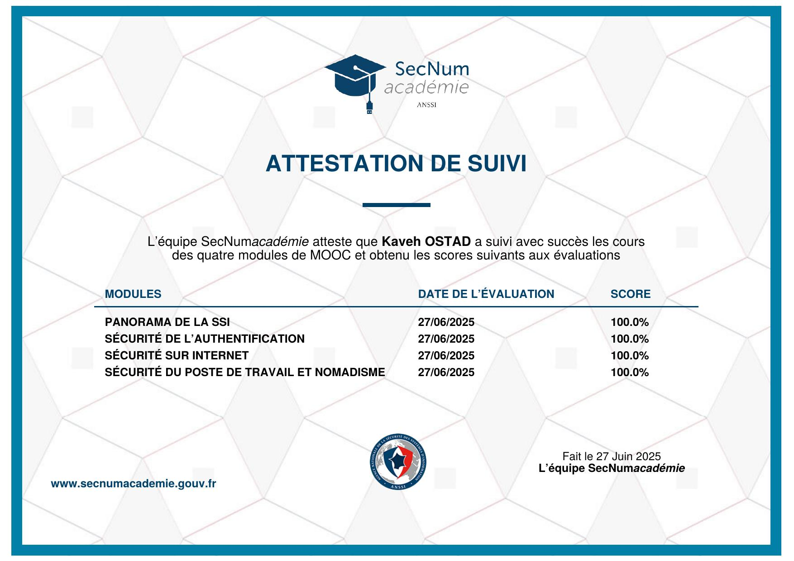

Kaveh OSTAD
Étudiant en BTS SIO option SLAM à l'EFREI Paris, en recherche d'alternance Bac+3 Data pour la rentrée 2026. Passionné par l'analyse de données, le développement web et les solutions applicatives métier. Ce portfolio retrace mes réalisations dans le cadre des épreuves E5 et E6.
Qui suis-je ?
👋 Présentation
Je m'appelle Kaveh OSTAD, étudiant en deuxième année de BTS SIO option SLAM (Solutions Logicielles et Applications Métiers) à l'EFREI Paris.
Mon parcours est polyvalent : après un BTS MCO (Management Commercial) obtenu avec mention Bien et 2 ans en alternance comme Assistant Manager, j'ai choisi de me réorienter vers l'informatique. Mes deux stages au Ministère de la Justice (DISP) m'ont permis de découvrir l'environnement IT d'une grande administration.
📊 Mon orientation Data
Mon expérience commerciale m'a appris à piloter par les KPIs (CA, marge, taux de conversion). Aujourd'hui, je veux pousser cette logique plus loin avec les outils data : SQL, BigQuery, Power BI, Metabase.
Je recherche actuellement une alternance Bac+3 spécialisée Data pour la rentrée 2026 (rythme 3 jours entreprise / 2 jours école), dans l'objectif de devenir Data Analyst.
Académique & professionnel
Licence ou Bachelor spécialisé Data
Poursuite d'études en alternance avec une spécialisation Data Analyse : automatisation, bases de données, requêtes SQL avancées.
Stage 2 — Technicien Support IT
Approfondissement des missions : gestion des flux d'incidents (GLPI), coordination transverse avec les services Budget/Finances et RH, rédaction de rapports techniques selon le référentiel ITIL.
Stage 1 — Technicien Support IT
Découverte du métier : priorisation des incidents avec GLPI, gestion du parc informatique, accompagnement des utilisateurs et documentation des procédures.
BTS SIO option SLAM
Solutions Logicielles et Applications Métiers : bases de données, analyse de données, gestion de projet (GANTT, Agile), développement web et applicatif.
Assistant Manager — Alternance
2 ans d'alternance pendant le BTS MCO : pilotage de la performance via Excel (analyse quotidienne des KPIs CA, marge, taux de conversion), élaboration de tableaux de bord pour l'aide à la décision.
BTS MCO — Management Commercial Opérationnel
Relation client (20/20), management d'équipe, argumentaire de vente, analyse de marché, veille commerciale. Première expérience qui m'a appris à piloter par les chiffres.
Mes certifications obtenues
Certification PIX
Évaluation et certification officielle des compétences numériques selon le cadre de référence européen CRCN (Cadre de Référence des Compétences Numériques).

MOOC SecNumAcadémie — ANSSI
Formation officielle de l'Agence Nationale de la Sécurité des Systèmes d'Information · 4 modules réussis avec 100% à chaque évaluation (27 juin 2025).
- Panorama de la SSI · 100%
- Sécurité de l'authentification · 100%
- Sécurité sur Internet · 100%
- Sécurité du poste de travail · 100%
Explorer mes réalisations
Présentation des compétences C1 à C22 à travers mes réalisations en formation et en entreprise (DISP).
Développement du client lourd et du client léger Promex, avec architecture, base de données et tests.
📡 Veille technologique
L'essor du Low-Code / No-Code dans le développement logiciel — méthodes Pull & Push.
🚀 Mes projets
Projets Data & Web : analyse de flux aéroportuaire (BigQuery, Metabase), WebStock (PHP/Python/SQL), et applications métier réalisées en formation.